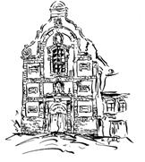
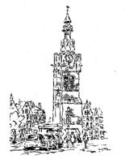
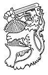
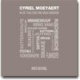
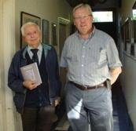
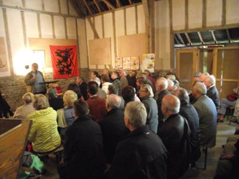
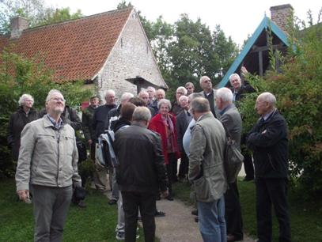
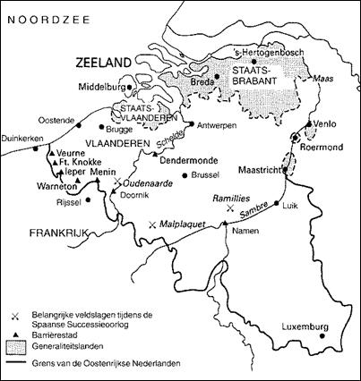

> nieuwsbrief
> 31e jg. - 1e trimester
2013
Bijdragen over:
|
Tip |
Hernieuwen
ledenbijdrage voor 2013
Hoewel we, zoals
elk jaar overigens, straks weer geconfronteerd zullen worden met de
uiteraard
weer eens naar boven aangepaste posttarieven, blijft uw ledenbijdrage
voor
2013 ongewijzigd. Ze beloopt voor het in mei te verschijnen nieuwe Jaarboek De Nederlanden extra muros en
voor de driemaandelijkse Nieuwsbrief Zannekin 29 . Vanaf 35
wordt u
met dank als steunend lid geboekt.
Maakt u bij
voorkeur gebruik van ons Belgische zogenaamd Europees
rekeningnummer,
waarvan de rekeningoverzichten ons dagelijks meegedeeld worden: IBAN:
BE13 4648
2202 5139 BIC: KREDBEBB t.n.v. Stichting ZANNEKIN, B. 8900 Ieper.
Bijliggend
betaalformulier kan u daarbij dienstig zijn. Leden
genieten bovendien ook een tastbare vermindering op de deelnamekosten
van de Zannekin-activiteiten.
Zannekin
Nieuwsbrief in een nieuw kleedje
De aankleding van deze Nieuwsbrief wijkt met zijn meerkleurenkaft - grondig af van
wat u totnogtoe onder ogen kreeg. Dit komt omdat het stilaan tijd werd
om nog
eens uit te pakken met een stijlvol visitekaar-tje, in de hoop
daarmee een
nieuw ledenpotentieel te kunnen aanboren.
Ook de inhoud is daar
voornamelijk op afgestemd en biedt enerzijds inzicht op de bedoelingen
van de Zannekin-werking
en anderzijds in het
volgende nummer - toelichting bij de naamgeving ervan. Wat dit laatste
betreft
stelt de bijdrage van onze destijdse ondervoorzitter wijlen dr. Luc
Carton
(overgenomen uit het allereerste (al lang niet meer verkrijgbaar)
jaarboek van
Zannekin) de
vereniging/stichting
in haar bewust gewild historisch perspectief.
André
Gailliaerde
Wij vernamen het overlijden op bijna 99-jarige leeftijd in de abdij van Averbode van pater André (Benjamin) Gailliaerde, norbertijn. Hij was dan ook de senior van de abdij. Na een uiterst vruchtbaar leven in het onderwijs van zijn orde, was hij vooral bekend als een gewaardeerd tekenaar en schilder. In zijn geheel eigen stijl en in forse trekken liet hij ons talloze mooie landschappen en gebouwen kennen vanuit alle hoeken van onze Nederlanden, niet in het minst vanuit Frans-Vlaanderen.
Kassel: de
voormalige Jezuïetenkerk
Hieruit straalt als het ware zijn liefde voor dit verloren stuk van onze Lage Landen. Wij hadden het voorrecht een aantal jaren door hem geïllustreerde agendas te mogen ontvangen. Zij blijven ook nu nog een waardevol familiebezit. Pater Gailliaerde was corresponderend lid van de Academia Internazionale Greci-Marino, de Academia del Verbano di Lettere, Arti, Scienze te Vercelli (Italië), enz
Uit
een gesprek dat we ooit met hem
hadden weten wij dat hij een overtuigd man van de Zeventien Provinciën
was. Met
hem ging niet alleen een diepgelovig priester, een goede opvoeder, een
groot
kunstenaar, maar vooral een goed mens heen. [

Hoe cond ick
U mijn broeders
oyt
vergeten
Daer wy toch
zijn in eenen
stronck
gheplant.?
Al syn wy
noch so veir van een
geseten,
So kan ons doch
gescheyden zee
noch
lant.
Marnix
van
St.-Aldegonde
De Vereniging/Stichting Zannekin richt de aandacht
op de grensgebieden
in Noord-Frankrijk en West-Duitsland w.o. Frans-Vlaanderen, Artesië,
Picardië,
Oost-Friesland, het Eemsland, Lingen, Bentheim, West-Munsterland,
Kleef, de
Gelderse gebieden bij Aken, en Luxemburg. Sommige van deze gebieden,
die als
een krans om de historische Nederlanden liggen, hebben ooit tot enig
Nederlands
staatsverband gehoord, andere hebben op economisch of cultureel gebied
nauwe contacten
gehad en weer andere en dat zijn dan naast Frans-Vlaanderen vooral de
Duitse
grensgebieden waren tot voor een paar generaties nog Nederlandstalig.
Al deze
landstreken hebben samen met Friesland en het Walenland een
onmiskenbare
bijdrage geleverd aan het culturele erfgoed en de eigenheid van de
Nederlanden.
Zannekin stelt zich tot doel om de historische en
culturele
banden met al deze van ons vervreemde gebieden nader te onderzoeken,
weer aan
te halen en waar nodig te hernieuwen. Als belangrijkste taak ziet Zannekin
het om de belangstelling voor deze gebieden te wekken en tevens
het
besef te
laten herleven dat de huidige grenzen alleen maar een politiek karakter
hebben;
ze doorsnijden een economische, culturele en historische eenheid. Deze
belangstelling kan in de toekomst de basis vormen om binnen het
historisch
kader en met respect voor de Christelijke grondslagen van de cultuur
van de
Nederlanden, te komen tot een nauwere samenwerking met deze gewesten
extra
muros. Hiertoe zijn binnen het huidige streven naar een verenigd
Europa reële mogelijkheden
aanwezig. Binnen het omschreven gebied wordt ook aandacht besteed aan
de
inheemse taalminderheden.
NAAM EN EMBLEEM
In België heeft Zannekin de status van
een
vereniging, in Nederland die van een stichting. De naam Zannekin is ontleend aan
de Zuid-Vlaamse vrijheidsstrijder Niklaas Zannekin. Deze hooftman van
de
opstandelingen in de Vlaamse kuststreek sneuvelde in 1328 op de
Kasselberg in
de strijd tegen de Fransen. Niklaas Zannekin is door zijn moed en inzet
in de
strijd tegen de vreemde overheersing en het sociale onrecht een symbool
geworden van de inzet en de strijd voor het geestelijke en culturele
erfgoed
van de Nederlanden.
ACTIVITEITEN
In de loop van het jaar organiseert Zannekin
de volgende
activiteiten:
* Studie-uitstap:
ieder voorjaar, op een
zaterdag in
mei, wordt per autobus en onder leiding van een meestal uit het gebied
afkomstige deskundige gids, een van de vele gebieden in West-Duitsland
of
Noord-Frankrijk bezocht, waarop de vereniging de aandacht gericht houdt.
* Ontmoetingsdag:
op een zaterdag in oktober
komen de
leden van Zannekin,
samen met belangstellenden uit het betrokken
gebied bijeen, in een van de historisch of cultureel belangrijke
plaatsen in
het Duitse of Noord-Franse grensgebied. In een aantal voordrachten
komen streekkenners
en andere deskundigen aan het woord die trachten de contacten in heden
en
verleden tussen hun streek en de overige Nederlandse gewesten te
beschrijven of
nader te analyseren.
De gebieden waar Zannekin aandacht voor
heeft
JAARBOEK
Sinds 1977 geeft de Stichting Zannekin
een eigen jaarboek uit. Elke aflevering bevat een keur van artikelen
die de
gemeenschappelijke historische, culturele en volkenkundige banden van
de
Benelux-landen met de grensgebieden in West-Duitsland en
Noord-Frankrijk tot
onderwerp hebben. Ook worden de belangrijkste voordrachten van de
ontmoetingsdagen
opgenomen. De bedoeling is om met dit Jaarboek een belangrijke
documentatie op
te bouwen over de Nederlanden extra bureaus en aan de opvattingen en
het
streven van Zannekin
ruimere bekendheid te geven. Ieder jaarboek
telt sinds kort 208 pp. en is rijk geïllustreerd.
LIDMAATSCHAP
Iedereen die de doelstelling van Zannekin onderschrijft kan
lid worden
van de vereniging Zannekin.
De financiële bijdrage is
(vanaf 2012) 29 per jaar. Daarvoor ontvangt men het Jaarboek, de
driemaandelijkse Nieuwsbrief Zannekin
en een belangrijke korting op de kosten van deelname aan de
activiteiten.
NADERE KENNISMAKING
U ontvangt vrijblijvend nadere inlichtingen
door het aanvragen van
informatiemateriaal bij het secretariaat of door het raadplegen van
onze internetpaginas
op www.zannekin.org.
In de taaltuin
van mijn vaderen
Onder deze titel publiceerde
Zelf afkomstig uit het Frans-Vlaamse Kaaster/Caestre, leerde de auteur ruim veertig jaar geleden, de ondertussen tweeënnegentig jaar geworden Moeyaert kennen. Hij werd Bourels mentor in zijn zoektocht naar zijn Vlaams-Nederlandse identiteit.
In de taaltuin van mijn vaderen is dan ook naast en bovenop de biografische invalshoek vooral een eigenzinnig en dankbaar getuigenis geworden aan het adres van zijn mentor.

bij het
overhandigen het pas
verschenen
boekje
Deze publicatie verschijnt in een
beperkte oplage en
komt niet in de boekhandel. Ze is uitsluitend bij de auteur te
verkrijgen.
Hulde aan Jan Hugo Bral en 'De schreve', een taalgrens ?
Mark
Ingelaere, Gent
De
E.H.
De kalendermopjes oogstten succes en voerden de Frans Vlamingen terug naar hun vroegere Tisje-Tasjes almanak. De 'koddetjes' waren ook goed voor vertaling in de cursussen voor het leren van het Nederlands.
Op een ANV-vergadering te Middelburg heeft Cyriel destijds de heer Jan Hugo Bral uit Melle en prof. em. Ada Deprez uit St.-Martens-Latem ontmoet. Dit is ondertussen al een tiental jaren geleden en sindsdien haalt Jan Hugo Bral bij alle KBC-kantoren in Oost-Vlaanderen de overtollige kalenders op. Prof. Deprez steunt hem daarin. Sinds een jaar is Jan Hugo ziek en kan hij deze taak in - dienst voor de Frans Vlamingen - niet meer opnemen.
Bij deze wil ik de heer Bral en prof. Deprez hartelijk danken voor hun jarenlange inzet, en wens hem beterschap. Dit kleine en waardevolle initiatief, en nog veel andere initiatieven kunnen evenwel niet verhinderen dat de Nederlandse streektaal, het Frans-Vlaams, er steeds meer in verdrukking raakt door de Franse eenheidstaal. Een belangrijke genadeslag werd immers toegebracht in de 20e eeuw toen er in de lagere scholen niet langer catechismusonderwijs, - dat in het Nederlands werd gegeven - onderwezen werd. Tussen de twee Wereldoorlogen gebeurde in heel wat dorpen het preken in de kerk nog in een Frans-Vlaams getint Nederlands. Rond 1960 verdween ook dit gebruik volledig, o.m. na de dood van Pastoor Boddaert (pastoor in Ledringhem van 1945 tot 1963).
Vandaag wordt het Frans-Vlaams in zijn bestaan bedreigd. Na de Tweede Wereldoorlog werden steeds meer kinderen thuis in het Frans opgevoed. Doordat de meeste 14-jarigen toen echter na de lagere school thuisbleven, werd dit alsnog soms bijgestuurd. Dikwijls leerden ze op de werkvloer opnieuw het Frans-Vlaams. Op het platteland en in sommige werkplaatsen en in de boerderijen werd dit toen immers nog vrij algemeen gebruikt.
Ook in de jaren 1960 werd het, hoofdzakelijk door de oudere generatie, nog vrij frequent gesproken. In sommige gevallen gaven zij het Frans-Vlaams ook nog door aan hun kinderen en/of kleinkinderen.
Hoopgevende
perspectieven zijn echter dat het Franse Ministerie van Cultuur in het
begin
van deze eeuw het Vlaams als onderwijstaal heeft erkend. Tevens bestaat
dankzij
het Ministerie van Nationale Opvoeding sinds enkele jaren de
mogelijkheid om in
verschillende basisscholen en middelbare scholen een cursus Nederlands
te
geven. Via de Nederlandse Taalunie bieden de Vlaamse en Nederlandse
regeringen
daarbij financiële ondersteuning en voorzien ze soms in de nodige
leerkrachten.
Een redding van het aloude dialect ligt daarmee echter niet in het
bereik.
Door deze Frans-Vlaamse initiatieven zal het Algemeen Nederlands in Frans-Vlaanderen hopelijk wel voet aan de grond krijgen en bijgevolg misschien de maatschappelijke situatie van het dialect versterken.
Een
vaststelling is alvast dat een groot aantal kinderen opnieuw in de
basisscholen
in Frans-Vlaanderen of over de Schreve (opnieuw) met het Nederlands in
contact
komen. Sommige scholieren slagen er zelfs in om deze taal vrij
behoorlijk te
beheersen. In een zestal scholen geeft
Terecht
stelt taalpionier
P.S.
Enkele
beelden van onze
Ontmoetingsdag 2012
te Villeneuve dAscq

De lezingen in
de grote schuur

Op
stap in het
Openluchtmuseum
Geschiedenis
van Herk-de-Stad (deel II) 1
Willy Alenus, Oostende
Een
strafexpeditie naar Reydt
Op 26 juni 1464 trokken de Herkenaren ten
getale van
27 manschappen, naar het fort van Reydt,
bij Gladbach in Duitsland, om deze vesting in te nemen.
Ziehier de oorzaak van dit offensief.
Henneken Loeren,
die zijn oog had laten vallen op het groot fortuin van een rijke
grondbezitter
van Alken, Gijsbrecht genaamd, spande samen met Jan van Arendael, heer
van
Reydt. Samen namen zij Gijsbrecht en zijn zoon gevangen.
Zij namen hem mee naar Reydt, vast besloten
als zij
waren hem slechts tegen een aanzienlijke som losgeld wederom in
vrijheid, te
stellen.
Na niet zonder moeite de buitenste,
versterkte
omwalling te hebben ingenomen, werden de verdedigers van het fort
omgekocht,
werd Henneken gevangen genomen en conform de zeden en gewoonten van de
tijd en
zonder enige vorm van proces aan een kerselaar opgehangen. Op die
manier
slaagden de Herkenaren erin de twee (rijke) Alkenaren, hun landgenoten,
hun
ontnomen vrijheid weer te geven.
In een fragment van de oudste archieven van
de stad Herk,
daterend uit de 15e eeuw, wordt ons duidelijk gemaakt wat dat peloton
van 27
manschappen in de praktijk voorstelde.
-Item, men
trocs uter stad tot Hercke souweneers, te wetene vijf voetboegscutters,
vijf
handboegscutters, ende vijf andere manne uten vijf ambachten, een
voerman en
een (?)- sleger, samen XVII manne. Ende ellick man gewapent op sijnen
last,
hadde III Borbonsche stuvers des daechs. Ende men hadde hun enen wagen
gehaelt,
onder die vijf wagenen van buten, met IIII perden.
Ende vijf
elken wagene2 van buten
vryheyt waren gesciet tot hunnen souweniers II manne, maken X manne
ende die
van Rummen, ende Zeelhem togen met
Ende men
dede den vorsz souweniers een tynte dar sy in lagen. Ende waeren des
avonts by
een te Herckenrode, ende des anderen daechs togen ze voert den lande na
inder
goetsgewout.
Dit verhaal, in oud Vlaamsch (Nederduytsch)
van Herk
opgesteld, moet wel echt zijn, vermits het geschreven en gearchiveerd
werd door
Arnold Heroens te zijnder tijd (1464)
zowel secretaris als notaris van de stad Herk.
Ziehier nu, naar ons gevoelen, de vertaling
van
vorenstaand fragment: De stad Herk leverde soldeniers, met name vijf
voetboogschutters, vijf handboogschutters, vijf andere mannen uit de
vijf
ambachten, een voerman en een (?)- sleger, samen zeventien manschappen.
Iedere
krijgsman was op zijn eigen kosten gewapend maar trok drie
Bourgondische
stuivers per dag. Elk van de vijf
gehuchten (buiten de vrijheid Herk), had een wagen (kar) moeten
leveren,
die met vier paarden was bespannen.
Elk van de vijf gehuchten leverde twee man, -
dit
geeft dus in totaal tien man en die van Rummen3 en Zelem
gingen ook
mee. De soldeniers kregen ook een tent om in te slapen. s Avonds werd
verzamelen geblazen in Herkenrode (Hasselt) en de dag nadien toog men
verder,
ieder naar eigen goeddunken.
Gelegenheid om eraan te herinneren dat onder
het
Ancien Régime de toentertijdse gehuchten van Herk, ook wagenen
genoemd,
elk van deze gehuchten afzonderlijk, een even groot deel van het totale
belastingen- pakket moest betalen als de stad Herk.4 Dat dit
tot
permanente betwistingen en rechtsvorderingen leidde, tussen de relatief
welvarende vrijheid en de na elke
catastrofe (mislukte oogst, pest, zwervende soldateska), straatarme
buitenkwartieren, hoeft geen betoog.
Drie jaar voor de expeditie van de 27 Herkenaren naar Reydt, werd de streek in opschudding gebracht door het ten tonele verschijnen van oproerlingen die men knuppelslagers noemde, in het Frans fustigeants of flagellants. In werkelijkheid waren het arme drommels, zonder rechten, voor wier noden de toenmalige standenmaatschappij niet het minste begrip had, laat staan medeleven. Niet voor niets werd van deze standlozen gezegd dat zij taillables et corvéables à merci waren, belastbaar en tot karwijen gedwongen, naar believen van de leden van het establishment.
Op hun mutsen, mouwen en vaandels was een wildeman afgebeeld, die in de rechterhand een knuppel droeg. Dit embleem was dus een herkenningsteken en het gaf tegelijkertijd ook een visuele uitleg ter zake hun aard en hun doelstelling.
Deze opstandelingen kwamen op tegen de landrechtereisers die de pacht van onze landbouwbevolking moesten innen, maar in de praktijk verder gingen met de techniek die men afpersen noemt. De toenmalige prins-bisschop van Luik, Lodewijk van Bourbon, veroordeelde deze uitbuiters, onder andere de landrechtereiser van Herk, genaamd Bartholomeus S. tot een boete van 200 Luikse guldens. Florent Silverijser, mede in zijn hoedanigheid van geestelijke, probeert het postulaat te verdedigen, dat het goed was onder mijter en kromstaf te leven. Recenter navorsingen hebben dit postulaat niet kunnen bevestigen of ontkennen.5 In Frankrijk werden deze arme boerenopstanden en hun vaak gruwelijke onderdrukkingen, jacqueries genaamd, reeds een eeuw vroeger begonnen (circa 1358), mede als gevolg van de desastreuze gevolgen van de 40- jarige Vlaams-Engelse, anti-Franse oorlog (1299-1340), de Engels-Franse slag bij Crécy (1346) en de pestepidemieën (1350).Voeg daar nog aan toe het optreden van de eigen ridderstand, dat vaak het tegenovergestelde was van de door de troubadours verzonnen naastenliefde en hoofse minne. Gelegenheid om hier, als voorbeeld, een parenthesis te openen ter demonstratie van het reilen en zeilen van de leden van de standen, plus de ridderstand6 misschien nog erger in oorlogs- dan in vredestijd.
Ridders
in oorlogstijd
Op 14 december 20077 schreven wij over Edward van Woodstock, bijgenaamd de black prince, oudste zoon van de Engelse koning Edward III en legeraanvoerder van de Engelse strijdmacht ten tijde van de honderdjarige oorlog (13371453), dat de meningen over zijn verdiensten wel verdeeld zijn:
Bij
de ridders in zijn tijd was Edward zeer geliefd. Sir John Chandos,
de Heraut, sprak
over de regeerperiode van de Prins in Zuid-Frankrijk als van "zeven
jaren
van vreugde, vrede en plezier", terwijl de prins in werkelijkheid een
verkwistend bewind, ja bij wijlen zelfs een schrikbewind had gevoerd.
De prins
had het platteland laten afschuimen door zijn soldateska en had zware
belastingen opgelegd o.m. om een enorme hofhouding en een permanent
gedekte
tafel voor min. 400 gasten te onderhouden. In 1367 waren de edelen van Gascogne tegen hem
en zijn belastingen in opstand gekomen. De prins was misschien een
toonbeeld
van ridderlijk gedrag, zeker in de ogen van de Vlamingen, maar van
behoorlijk
bestuur, staathuishoudkunde of van begrip voor de noden van de burgers
die niet
tot zijn eigen ridderstand behoorden, had hij alleszins geen kaas
gegeten.
Groententers
Twee jaar na de expeditie van de Herkenaren naar Reydt, verschijnen hier en in de omstreken een ander soort oproerkraaiers. Deze maakten het land van Loon zo onveilig dat afgezanten van de stad Herk en van andere goede steden die door de prins waren uitgenodigd om naar de hoofdstad te komen, het niet durfden wagen de reis naar Luik te ondernemen. Men noemde deze oproerlingen groententers, omwille van de kleur van hun kleren en ook als verwijzing naar hun zwervend bestaan.
Toen in 1466 de beruchte hertog van Bourgondië, Karel de Stoute met zijn leger langs de Romeinse kassei, van Sint-Truiden naar Tongeren trok, gaf hij aan een aantal pelotons van zijn leger het bevel die zwervende roversbenden lik op stuk te geven. Waarschijnlijk hadden ze het lef gehad, op zijn legertros en kampementen, de hit and run-tactiek toe te passen?
Op 17
Veroveringspolitiek
van Bourgondië
Op de Vlaming,
burger van het
antieke graafschap Vlaanderen (vandaag Oost- en West-Vlaanderen, plus
Zeeuws-
en Zuid-Vlaanderen), maakt het statement van de hoogstaande Franse
historicus
Ernest Lavisse
(1842-1922), nog
altijd een aangename indruk:
In de Nederlanden extra muros, o.a. in Loon en Luik, lagen de gevoelens tegenover Bourgondië en de toekomstige Bourgondische Kreitz, wel enigszins anders.
De eerste hertog van Bourgondië en Brabant, die Herk-de-Stad bedreigde, was Filips de Goede, vader van Karel de Stoute. Deze prins plaatste in Halen, een zeer dichtbij gelegen grensstad van het hertogdom Brabant en het graafschap Loon, jonker Jan van den Hove, onderschout der stad Leuven, als garnizoensoverste om Halen tegen de aanvallen van Herk te verdedigen.
Met zo een
aanvoerder op kop
waagden de Halenaren het ook van hun kant een defensieve aanval uit te
voeren.
Commandant Jan van Lobosch, aangesteld
als verdediger van Herk, was groot van gestalte, maar had ook de
reputatie niet
van de dappersten te zijn en bovendien ook geen geboren krijgsheer. Zo
maakte
hij de tactische, ja zelfs strategische fout van zich binnen de wallen
en
achter de grachten van Herk terug te trekken, in plaats van de vi
Als slechte tacticus liet hij de tegenstrever tot onder de muren van de stad komen, dichtbij genoeg om hem toe te laten de eerste verdedigingswerken te beschadigen en in brand te steken.
Om gedurende de daaropvolgende nacht een aanval te kunnen afweren, versterkte men de binnen- en de buitenwacht van de stad. Van de toenmalige secretaris Arnold Heroens vernemen wij inderdaad dat buiten de gewone wachtdiensten er nog een bijzondere wacht, 20 man sterk aan toe werd gevoegd:
Item,
men ghinc doen 1464 waken binnen der stad tot Hercke, op den
driesch ende in die Quoderstrate (de
Quoterstrate was gelegen langs de vestingen van aan de Diesterse poort
tot de
Sint-Truider poort) met getale van mannen
op elke plaats vorsz tot des sondachts dar na, dat was sondaechts na
Jans
dach
Item,
des sondaechs wort verdragen datmen een ander waken setten
soude, alsmede dede,- te wetene niet aengezien der waken die voer
geweest is.
Sioe zal men beginnen opt dinde vander Quoderstrate aen die maeve ende
op die
syde ten Damervelde - (Damerveld, tegenwoordig op het kadaster
Tamerveld
genoemd), strekte zich uit van de Diesterse- tot aan de Hasseltsepoort)
wert, ende daer nemen achter een volgende X
manne, die alle avunde comen sullen voer der stad huys by die
meesteren.
Ende alsdan quamen uyt elken wagen van buten II mans, oec in die stad maken XX mans te samen. Wulke XX mans geset worden hoe sy waken souden vanden meesteren. Is te wetene van den X van binnen satmen vyf manne buten te wakene, ende vyf manne uyt den wagenen by die vorsz vyve van buten, ende die andere vive van binnen ende V van buten waeckden binne aen die porte ende op die vesten tot een ure na middernacht, ende alsdan quamen die buten waren in de stad, ende die binnen waren gingen uyt waken als die andere gedaan hadden.
Hertaling
Ziehier nu dit verhaal met andere woorden,- Zo ook ging men toen in het jaar 1464 waken te Herk op den Driesch en in de Quoderstraat. Op iedere voorgeschreven plaats met een zeker aantal mannen tot de zondag daarna, dat was, tot de zondag na Sint-Jansdag.
Ook deze zondag wordt gezegd dat men een
andere wacht
zou zetten als men gedaan had, met in aandacht nemen van de wacht die
er eerst
geweest is. Zo zal men beginnen op het einde van de Quoderstraat aan
die
Hameye, en op de zijde van het Damerveld, en daar nemen 10 mannen die
alle
avonden zullen komen naar het stadhuis bij de twee burgemeesters. En
alsdan
kwamen uit elk gehucht, - (er waren toen 5 gehuchten, dit maakt dus
vijf maal
twee oftewel 10 mannen uit de gehuchten) - (daarbij komt nog) twee man
en ook
10 mannen van de stad zal men vijf buiten de stad zetten om te waken,
en vijf
mannen uit de gehuchten zal men zetten met de reeds genoemde vijf om te
waken
buiten de stad - en de andere vijf van de stad en de vijf van de
gehuchten,
waakten binnen aan de poort en op de Vesten tot een uur na middernacht,
en dan
kwamen degenen die buiten waren de stad binnen en degene die binnen
waren
gingen buiten waken wanneer de andere gedaan hadden.
Noten
______________
1
3
Vandaag
maakt het voormalige Loonse Rummen,
als deelgemeente van de Brabantse gemeente Geetbets, deel uit van de
provincie
Vlaams-Brabant.
4 Dr.
J.
Molemans, a.w.. zie supra.
5
Men leze
o.a. (1) Willy Alenus,
Herk-de-Stad onder het Ancien Regime, in: Vlaamse
Stam, jg. 39, no. 1 ((
6
Alhoewel
de coördinaten van de standen wel
wijzigingen ondergingen tijdens hun vijftienhonderd jarig bestaan, was
hun
samenstelling bijna continu: hoge adel en landadel, hoge geestelijkheid
(vaak
ook militairen zoals meerdere prins-bisschoppen van Luik) en de derde
stand, de
tabberdadel en/of de ambachten. De ridder-stand is nooit een stand,
laat
staan een vierde stand geweest. Maar gebaseerd op hun fysieke kracht en
hun
krijgskunde, was hun prestige van die aard dat zelfs voor een keizer of
koning,
toch de absolute top van de standenmaatschappij, het nog altijd als een
eer
gold, tot ridder te worden geslagen, veelal op het slagveld, na een fel
bevochten overwinning, en door een vermaarde ridder zonder vaar nog
vrees.
Prinz Eugen der edle Ritter, is een schoolvoorbeeld van deze halve
goden.
7
Willy Alenus, The olde
alliance -
8
Zij werden ook wel coterelli (Fr.: coteraux)
of ruptarii (Fr.: routiers;
Ned.: ruters of rotgezellen) genoemd.(Encarta
Winkler Prins).
Marten
Heida
Als eerste inleider kreeg Timothy Sodmann
uit Südlohn
het woord. Hem was gevraagd De historische
achtergronden van de Heliand te schetsen. Allereerst refereerde
hij aan de
vele conflicten tussen de Saksen en de Franken. Mede als gevolg van de
grote
verliezen werden de Saksen uiteindelijk gedwongen zich over te geven
aan Karel
de Grote en moesten ze het Christelijk geloof aannemen. Trouwens ook de
rechtspraak werd op Frankische leest geschoeid. In het kader van de
kerstening
werden ook de nodige kloosters gesticht. Binnen zon gemeenschap moet
de
Heliand - die geschreven is in de oud-Saksische taal - zijn ontstaan.
In een
beeldrijke compositie, opgesteld in de traditie van de Saksische
dichtkunst,
wordt het leven van Christus bezongen. Opvallend is dat menige
legende in dit
werk is ingevlochten. De Heliand is dan ook een prachtig voorbeeld van
geestelijke epiek in de volkstaal. Terecht wordt dit geschrift
beschouwd als
behorend tot de culturele erfenis. De tweede man achter het
sprekersbord was Henk
Krosenbrink uit Winterswijk. Zijn taak was het het gezelschap duidelijk
te
maken wat de betekenis van De Heliand
voor de Achterhoekers was. Als inzet las hij het verhaal van de
bruiloft
te Kana in het oud-Saksisch voor; vooraf
merkte hij ironisch op dat niemand hem kon bekritiseren over de
juistheid van
de uitspraak. Bij de vertaling van de Heliand in het Achterhoeks waren
de leden
van de werkgroep zo dicht mogelijk bij de oorspronkelijke tekst gaan
zitten.
Zoals Henk Krosenbrink het nodige had opgemerkt over De Heliand voor de Achterhoekers zo was Hannes Demming uit Munster de man die stem gaf aan De Heliand in het dialect van Munsterland. Hij begon met de bekentenis dat hij - vóór hij aangezocht werd om lid te worden van de werkgroep - nauwelijks iets van dit geschrift afwist. Toch had dit hem niet weerhouden tot deze werkgroep toe te treden. Wel had hij zich afgevraagd voor wie ze deze inspanning deden want wie verstaat er nog het Munsterse Plat; deze sprekers vormden immers de doelgroep van hun vertaalwerk. Een mceilijkheid bij het vertalen was of ze erin zouden slagen om het oude stafrijn tot zijn recht te laten komen. Om te laten horen op welke wijze ze dit probleem tot een oplossing, gebracht hadden sloot hij af met het voorlezen van de aankondiging van Jezus geboorte in het Munsterse dialect.
Marten Heida
Prins Willem Alexanderpark 53,
NL3905 CB
Veenendaal
De Vrede van Utrecht in 1713
Hertekening
van de kaart van Europa en de wereld met veel gevolgen voor
de Nederlanden extra muros
Er werd in 1712 op hoog politiek
niveau gedurende
ruim een jaar onderhandeld om uiteindelijk tot de Vrede van Utrecht te
komen,
die getekend werd op dinsdag 11 april 1713, uitgerekend op de kop
veertig jaar na
de Slag aan de Peenebeek, in Frans-Vlaanderen. Onder de reeks
bilaterale
verdragen lichten wij er een paar uit:
·
Karel VI van
Oostenrijk kreeg de Zuidelijke
Nederlanden, Milaan, Napels en Sardinië toegewezen, maar niet Spanje.
·
·
Een aantal Franse
kolonies in Noord-Amerika kwamen
in Britse handen, dat was o.a. het geval voor Newfoundland/Terre-Neuve
en
Acadië.
· De Republiek der Verenigde Provinciën raakte, ondanks het feit dat ze aan de kant van de overwinnaars stond, zijn overwicht op zee kwijt. Een hereniging met de Zuidelijke Nederlanden zat er jammer genoeg niet in.
· De zuidelijke grenzen van de Verenigde Provinciën mochten wel garnizoenen opstellen in versterkte steden van de Zuidelijke Nederlanden als bescherming tegen de Fransen, die delen van de in 1677 geannexeerde gebieden terug aan de Zuidelijke Nederlanden dienden af te staan. Deze steden, later ook deels Barrièresteden geheten, waren o.a. Veurne, Ieper, Menen, Kortrijk, Oudenaarde, Gent, Doornik, Bergen, Charleroi, Namen. De bepalingen en voorwaarden werden gegoten in het Barrière-tractaat van 15 november 1715. De Zuidelijke Nederlanden werden militair een condominium tussen de Oostenrijkse keizer en de Republiek.

·
De Republiek kreeg
beperkte gebiedsuitbreiding met
o.a. de stad Venlo maar verloor de soevereiniteit over het prinsdom
Orange, dat
aan Frankrijk werd toegewezen.
· De Zuidelijke Nederlanden werden sindsdien de Oostenrijkse Nederlanden tot 1794.
De Stichting Zannekin zal in 2013 ruime aandacht besteden aan de Vrede van Utrecht.
"De Zavelberg"
Edouard Michielsstraat 51
B - 1180 UKKEL / Brussel
Tel. 00 32 485 630 227
Ver weg in het
Noord-Duitse
Sleeswijk-Holstein vertoef je in
Nu nog leeft het Platt er nog voort.
(Foto CK)